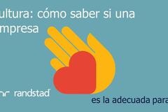

06 diciembre 2017una nueva generación de profesionales: llega el job hoppingmovilidad laboralemployer branding
06 diciembre 2017transformación digital: ¿cómo llevarla a cabo?liderazgomovilidad laboralemployer branding
06 diciembre 2017los algoritmos, al servicio de la gestión de rrhhliderazgomovilidad laboralemployer branding
30 noviembre 2017¿trabajas en rrhh? cómo ser creativo para encontrar profesionales creativosliderazgomovilidad laboralemployer branding
30 noviembre 2017cultura: cómo saber si una empresa es adecuada para tiliderazgomovilidad laboralemployer branding